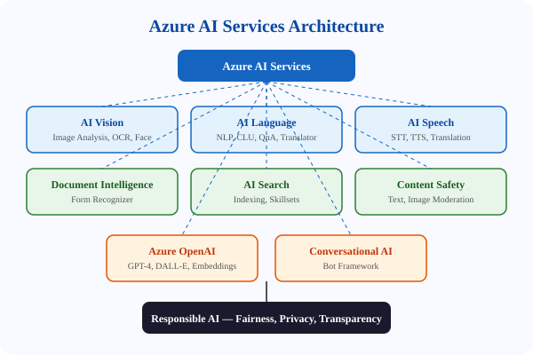

← Back to Tutorials

AI-102: Designing and Implementing Azure AI Solutions
A comprehensive exam preparation guide covering every major topic in the Microsoft AI-102 certification — from Azure AI Services fundamentals and computer vision to natural language processing, speech services, knowledge mining, document intelligence, Azure OpenAI, and conversational AI. Each chapter includes exam tips, hands-on exercises, and real-world scenarios.
Table of Contents
1. Introduction to AI-102 Exam structure, skills measured, and study roadmap 2. Azure AI Services Overview Provisioning, endpoints, keys, multi-service resources, and container deployment 3. Security, Monitoring, and Governance RBAC, virtual networks, Key Vault, diagnostic logging, metrics, alerts, and cost management 4. Azure AI Vision: Image Analysis Tags, descriptions, OCR, adult content moderation, thumbnails, and object detection 5. Custom Vision: Classification and Detection Training custom models, labeling, evaluation metrics, and SDK consumption 6. Face API: Detection and Recognition Face detection, identification, verification, attributes, and ethical considerations 7. Video Indexer and Spatial Analysis Video insights, face detection in video, and spatial analysis for presence and movement 8. Natural Language Processing Key phrase extraction, entity recognition, sentiment analysis, language detection, and PII identification 9. Custom Text Classification and NER Custom entity recognition, text classification, and solution patterns for domain-specific NLP 10. Conversational Language Understanding Intents, entities, utterances, training, evaluation, and deployment with CLU 11. Custom Question Answering Knowledge bases, multi-turn conversations, active learning, and alternate phrasing 12. Speech-to-Text Real-time and batch transcription, custom speech models, and keyword recognition 13. Text-to-Speech and SSML Neural voices, Speech Synthesis Markup Language, voice customization, and audio output 14. Speech Translation Speech-to-speech and speech-to-text translation, multi-language simultaneous translation 15. Azure AI Content Safety Text moderation, image moderation, prompt shields, and groundedness detection 16. Azure AI Search: Indexing and Queries Provisioning, indexes, data sources, indexers, query syntax, filtering, and sorting 17. AI Search: Skillsets and Enrichment Built-in skills, custom skills, knowledge stores, and AI-powered indexing pipelines 18. Azure AI Document Intelligence Prebuilt models, custom models, document analysis, and extraction patterns 19. Azure OpenAI: Models and Prompt Engineering GPT models, prompt design, code generation, content filtering, and responsible use 20. Azure OpenAI: Advanced Patterns DALL-E image generation, function calling, embeddings, RAG patterns, and fine-tuning 21. Bot Framework SDK: Dialogs and Cards EchoBot, dialogs, adaptive cards, waterfall dialogs, and integration with AI services 22. Bot Framework Composer and Publishing Visual bot design, language generation, adaptive dialogs, and deployment to Azure 23. CI/CD and Container Deployment DevOps pipelines, containerized cognitive services, Docker deployment, and automation 24. Cost Management, Monitoring, and Diagnostics Pricing tiers, budget alerts, Application Insights, diagnostic logs, and performance tuning 25. Exam Preparation and Practice Study strategies, sample questions, time management, and last-minute review checklist
Start Learning →